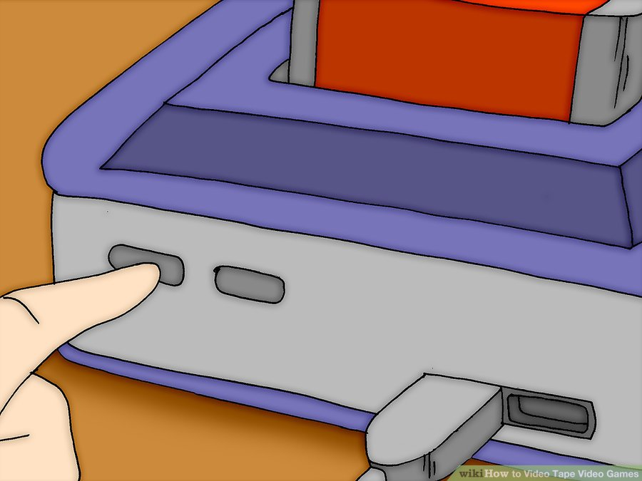
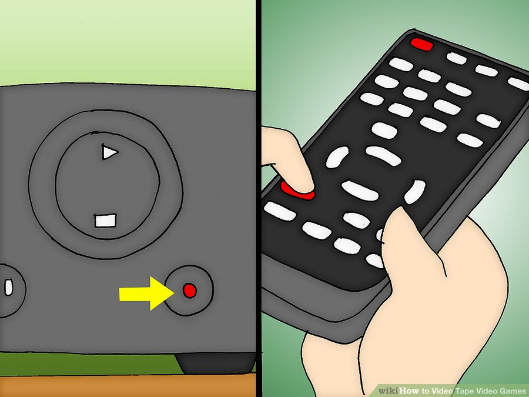

Table of Contents
How to Video Tape Video Games
Playing video games can be stressful. So, what is better than watching yourself play? You can record your video games for reference, entertainment and good memories later, but you're not a tech nut? Forget digital recording, just directly record it onto a video tape on your VCR!
Part 1 of 5: For a Video
- Make sure you have a VCR that records
- Set VCR to record whatever is on the screen 
- Set up your game system, plug it in, and turn on the TV to the channel that you play your games on. 
- Press the record button, usually a red circle, on your VCR or remote control.
- Press stop, the black squre to cease recording.
- Label the video tape.
- Pull off the tape on the outside of the video tape when you have filled it up if you don't want it taped over.


Part 2 of 5: Tips for Video
- Uploading video tapes onto the computer can be tricky, if not impossible.
- This works both for TVs with and without VCRs attached.
- You can set your TV to record low quality for more time or high quality for a shorter amount of time.
- Make sure not to forget and just leave the tape recording!
Part 3 of 5: For a DVD/CD
- Make sure you have a DVD Player that records.
- Put in a writable DVD or a writable CD, you can buy these at Walmart or any other place that sells that kinda stuff.
- Set up your DVD Player to record whatever is on the screen.
- Set up your video game system. Plug it in.
- Set your TV to the channel that you play your games on.
- Press the record button, usually a red circle, on your DVD Player or remote control.
- Press Stop to cease recording
Part 4 of 5: Tips for DVD/CD
- Some DVD Players can't play record on DVDs. Some can't record on CDs.
- If your DVD Player can record CDs, it will be easier to put on a computer.
- If all else fails, you can buy a TV Tuner Card for your computer so you can connect your video game consoles to your computer and play them. Then you can download CamStudio to record what is on the screen.
Part 5 of 5: How to Upload Your Video on YouTube
- Use DVD converter to convert it to .MPEG-2 or .MPEG-4. (best formats for youtube)
- Upload your video, and done!